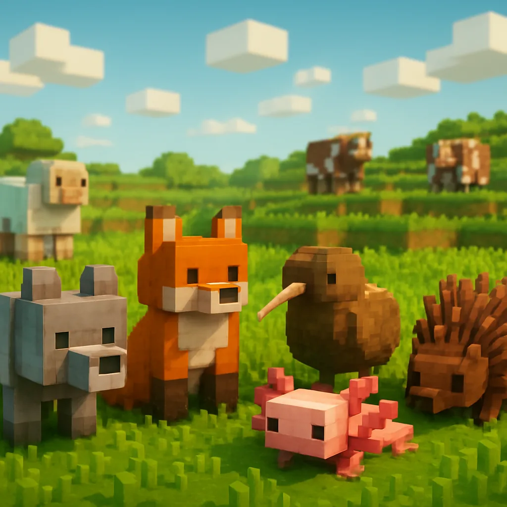

Animora Kingdom


Full of animals
Runs smooth
Quality of life
YOUR NEXT ADVENTURE STARTS HERE
Animora Kingdom
v 1.4.124 mods · Minecraft 1.21.11 · Fabric · Arquivo .jar
See the modpack in action
24 carefully picked mods
Explore every mod included in Animora Kingdom.